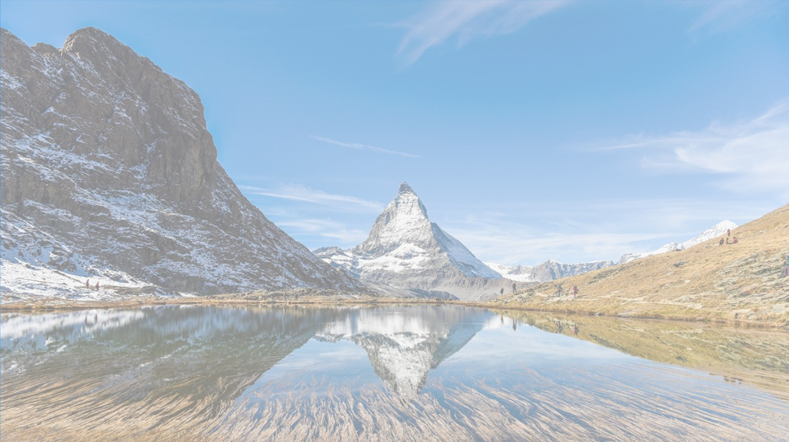

Alvorada Cristalina
Um majestoso pico que se eleva acima das nuvens, a Montanha Alvorada Cristalina é conhecida por suas encostas cobertas de neve reluzente.
Pico Glacial Sereno
Localizado em um cenário isolado, o Pico Glacial Sereno exibe uma beleza austera e intocada
Estrada Celestial das Alturas
Esta montanha é mais do que um mero pico; é uma estrada de acesso a um mundo de maravilhas.